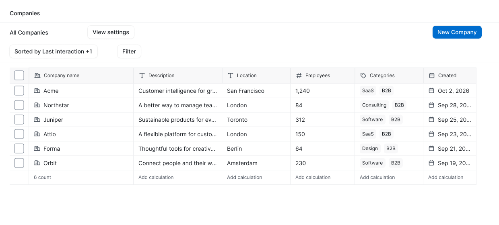
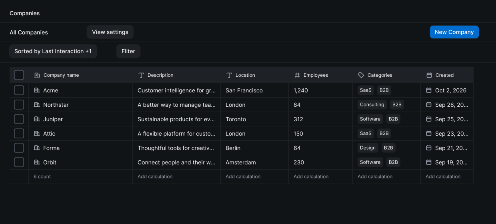
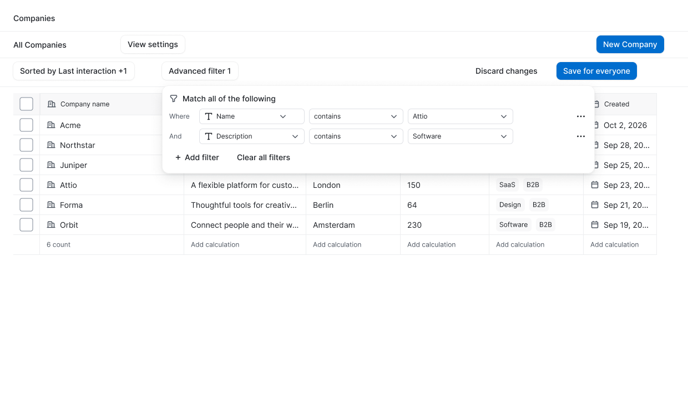

Build a text filter
Choose an attribute, choose a comparison, then press Return to apply the fixed sample value. The applied screen shows the matching row and change controls.
Reference study · tables & filters
Attio table and filter patterns, rebuilt as reusable Spartan components. This report records the delivered library, verified source interactions, design-token exceptions and the limits of the prototype.
Live findings take precedence for the inspected controls. Documentation broadens the scope, while screenshots provide visual references. Each evidence label applies only to the behavior described in its row.
| Component family | Behavior to represent | Evidence | Reference |
|---|---|---|---|
| Attribute picker | Searchable attribute list with type icons. Relationship rows show counts and chevrons. An unmatched search displays an empty-results message. | Verified live | Companies workspace ↗ |
| Typed comparison menu | Name supports contains, does not contain, starts with, ends with, is, is not, empty and not empty. Twitter follower count supports is, is not, less than, greater than, empty and not empty. Foundation date supports is, is not, before, after, empty and not empty. Categories supports contains, does not contain, empty and not empty. Inclusive numeric comparisons were absent. | Verified live | Companies workspace ↗ |
| Category value picker | Searchable options with colored category labels. A search for software produced an empty-options state; clearing the query restored the list. Choosing Accounting closed the picker and applied the condition. | Verified live | Companies workspace ↗ |
| Relative date picker | Presets cover the current day, adjacent days, a week or month before or ahead, a custom day offset, and a specific date. | Verified live | Companies workspace ↗ |
| Exact date calendar | Back navigation, natural-language entry, month arrows and year display. The calendar starts on Monday, marks the current day with a dot, and has a bottom date input using month/day/year order. | Verified live | Companies workspace ↗ |
| Condition actions | The simple condition menu offers conversion to an advanced filter or deletion of the filter. Inside the advanced form, the row menu offers group conversion or deletion of the condition. | Verified live | Companies workspace ↗ |
| Nested filter group | Outer and inner condition prefixes, a field/comparison/value row and an overflow menu. The group includes add and delete controls; the overall builder includes adding a filter and clearing all filters. | Verified live | Companies workspace ↗ |
| Results / view changes | A Name condition containing Attio returned one record after transient loading feedback. The view exposed discard and a split save-for-everyone control. Discarding restored the original view. Saving was not executed. | Verified live | Companies workspace ↗ |
| No matching records | The Accounting category condition loaded, then returned zero companies. Table headings and the footer remained visible around a centered icon, no-match heading, explanatory text and a control to clear the filter. | Verified live | Companies workspace ↗ |
| Sort rule list | Two rules with drag handles, attribute breadcrumbs, a direction selector, individual removal and an add-rule control. A descending choice and help footer were visible. Drag reordering was not exercised. | Verified live | Companies workspace ↗ |
| View column settings | Reorderable attribute rows and an add-attribute control. Each settings-row submenu offers label changes or column removal. This menu is distinct from the table-header menu. | Verified live | Companies workspace ↗ |
| Column header / label | The header menu offers both sort directions, movement left or right, label editing and hiding. Label editing opens a modal with an input and cancel/save actions. No label change was saved. | Verified live | Companies workspace ↗ |
| Selected-row toolbar | One selected record exposes a count, selection clearing, list assignment, email, workflow and overflow actions. The overflow contained only record deletion for this single-selection state. No record action was executed. | Verified live | Companies workspace ↗ |
| Multiline cell editor | Enter on a Description cell opened a multiline editor anchored at the cell’s upper-left, approximately 350 × 136 pixels, without footer controls. Escape cancelled editing and left the value unchanged. The size is a visual estimate, not a measured token. | Verified live | Companies workspace ↗ |
| Additional cell interactions | Record-hover actions, keyboard cell movement, rectangular selection and compatible-value paste are documented. Column-edge resizing and date/currency display formatting are also documented, but these behaviors were not exercised live. | Official documentation | Table views ↗ |
| Additional filter logic | Documentation describes conjunction/disjunction, filtering through linked records, status history, list membership, current-member values and saving a separate view. These behaviors extend beyond the live checks listed above. | Official documentation | Filters & sorts ↗ |
| Typed editor | Text, numeric, currency, date, status, selection, checkbox, rating, member, record, relationship, location and phone values require suitable editors. Text permits line breaks; phone values require valid formatting. | Official documentation | Attribute types ↗ |
| Numeric aggregation menu | The menu offers counts and percentages for empty or filled cells, plus sum, average, minimum and maximum. Only the menu contents were inspected; no calculation option was selected. | Verified live | Companies workspace ↗ |
| Value history | A cell menu can expose attribute-value history, subject to plan availability. The history panel and its behavior were not inspected live. | Official documentation | Table views ↗ |
| Read-only state | Object permissions can allow viewing while preventing data changes. The component system should represent that distinction; its exact presentation remains unverified. | Official documentation | Permissions ↗ |
20 component families shown.
Official visual references reviewed: recruiting table, advanced filter groups, sort settings and column-label editing. Earlier local evidence includes Companies in light mode, Companies in dark mode and the view menu. These dated captures supplement the live findings above.
The Attio page contains editable component families, connected table compositions and bounded interaction examples. Source coverage and component completeness are distinguished below.
| Build area | Verified result | What was checked |
|---|---|---|
| Component library | 28 families | 26 component sets with 97 variants, plus two standalone components: Header row and Multiline editor. |
| Review & prototype screens | 27 screens | 25 prototype screens and two light/dark review frames. Tables contain six synthetic companies. |
| Prototype navigation | 232 connections | All navigation destinations are valid. Structural inspection and screenshot review completed; the complete graph was not traversed in the Figma player. |
| Native content slots | 79 master slots | 1,318 including instance occurrences. No slot fill violations. Table bodies preserve connected row instances when their order changes. |
| Color & icon audit | No audit violations | 10,012 solid paints inspected with zero unbound paints. All 885 inspected icons use the required style, radius and stroke configuration. |
Verified sample outcomes: the Attio text filter displays one company; the Accounting category displays no matches; the sorted sample changes row order while retaining connected row instances. Open the build audit ↗



Choose an attribute, choose a comparison, then press Return to apply the fixed sample value. The applied screen shows the matching row and change controls.
Open filter actions, convert to advanced conditions, open the condition actions, then convert to a nested group.
Choose Categories and Accounting, review the no-match table, then clear the filter to return to the default companies screen.
Choose a sort direction to reach the reordered sample. Enter opens the multiline cell editor; Escape returns without changing sample content.
Move from relative date choices into the exact-date calendar, then follow a fixed date selection to the applied sample.
Empty, error, read-only and range-selected tables; member/multi-select editors; hidden/dragging columns; and saving/saved controls are illustrative extensions, not verified copies of current Attio rendering.
Prototype boundary: fixed sample navigation with click, hover, Enter and Escape states. It does not provide arbitrary typing, query evaluation or data persistence. The save action opens a sample screen and makes no CRM write. Drag, reorder and resize states are visual specimens; the underlying Figma model remains editable.
The final audit found no unbound solid paint colors. Existing Spartan components, semantic color roles, text styles, spacing, radii and effects supply the shared styling. Explicit values remain for component geometry, sample sizing and the supplementary hidden-column state. All recorded exceptions are listed below.
| Property / value | Closest existing token | Reason & usage | Status |
|---|---|---|---|
| Table cell, row & calculation height 36 px | density/control/height/small and density/control/height/base | Existing modes resolve to 28, 32 or 40 px around this size. None matches the observed 36 px table density; the row height remains explicit. | Verified exception |
| Default component widths 224 / 240 / 176 / 420 px | No matching component-width role | Data value 224, cell/header 240, segment 176 and chip 420. These are adjustable specimen defaults rather than shared design-token roles. | Verified exception |
| Incomplete segment outline 3 px dash / 2 px gap | No dash-pattern role | Pattern geometry distinguishes an incomplete segment. Border color remains semantic. | Verified exception |
| Focus, edit, resize & range stroke 1 / 2 px | color/focus-ring/default supplies color, not stroke geometry | Focus and grid borders use 1 px; editing, resizing and range outlines use 2 px. Widths are explicit geometry; colors remain semantic. | Verified exception |
| Table composition width 1,160 px | No component-dimension role | Resizable row and table specimen width, independent of the shared styling. | Verified exception |
| Column widths 48 / 260 / 220 / 170 / 160 / 170 / 132 px | No column-width role | Independently editable widths reflecting the sample content and source proportions. | Verified exception |
| Table state-message area 1,160 × 280 px; body width 560 px | No state-message geometry role | Composition dimensions for centered empty, no-match and supplementary message specimens. | Verified exception |
| Multiline editor 350 × 136 px | No role-specific dimension token | Approximate source geometry with editable slot content. Existing padding, radius, colors and typography are retained. | Verified exception |
| Panel construction value | Role & closest-token assessment | Status |
|---|---|---|
| Default panel widths 248 / 264 / 280 / 288 / 320 / 352 / 440 / 540 / 580 / 720 / 780 / 900 px | Content-dependent, adjustable specimens: condition/overflow 248; operator/calculation 264; column 280; chip menu 288; picker/editor 320; settings 352; modal/save controls 440; sort row 540; sort panel 580; condition row 720; group 780; bulk toolbar 900. No corresponding component-width tokens. | Verified exception |
| Nested segment widths 144 / 170 / 180 / 190 / 224 px | Adjustable layout geometry. Existing filter-segment styling and 28 px height are retained; segments stay connected to their masters. | Verified exception |
| Calendar day cells 36 px initial width / 28 px height | Fixed sample grid geometry. Existing control-height roles can represent 28 px in one mode; a dedicated calendar-cell dimension role is absent. Colors, spacing and radii retain token bindings. | Verified exception |
| Panel strokes 1 px | Explicit border/separator geometry with semantic border colors. | Verified exception |
| Hidden column opacity 50% | No matching hidden-column opacity role was identified. This is a supplementary state, not the observed default settings-list presentation. | Supplementary exception |
| Master arrangement 24 / 32 px variant gaps; 24 px padding; 80 / 160 px family separation | Canvas organization only. Atom origin 100,100; panel origin 5,000,100. These values are not component anatomy or proposed tokens. | Canvas-only geometry |
| Prototype & review frames 1,240 × 720 px / 1,240 × 560 px | Presentation dimensions, not product token roles. The components remain independently resizable. | Canvas-only geometry |
| Prototype placement & hit regions Absolute positions / transparent regions | Bounded navigation examples, not responsive application behavior or a shared token role. | Prototype-only geometry |
The typography and colors used to format this report are presentation choices, not findings about Attio or claims of Spartan token binding.